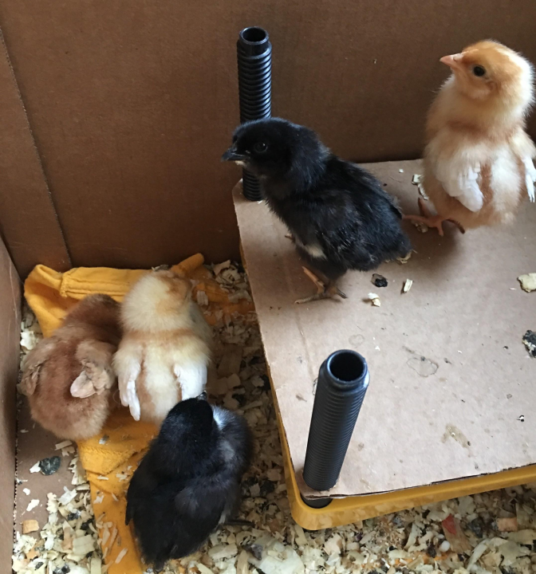
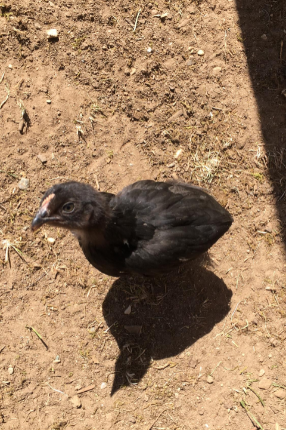
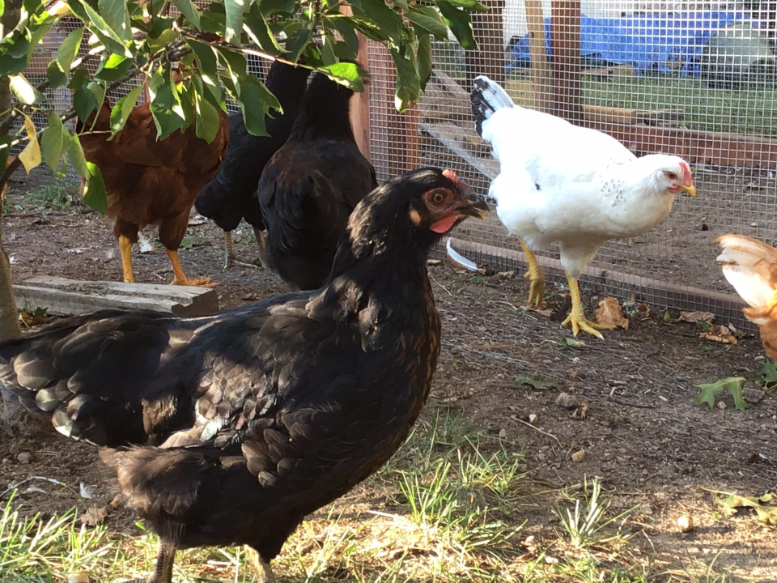
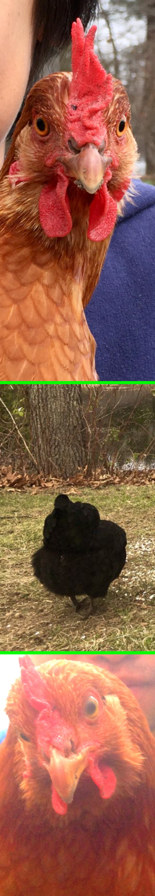
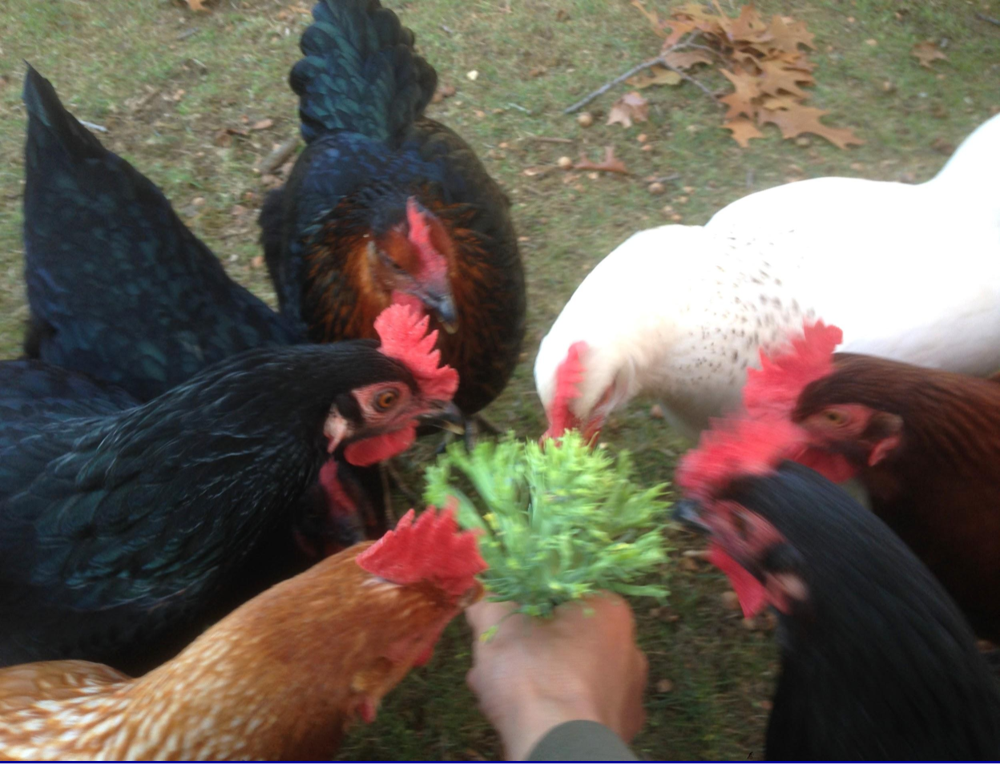
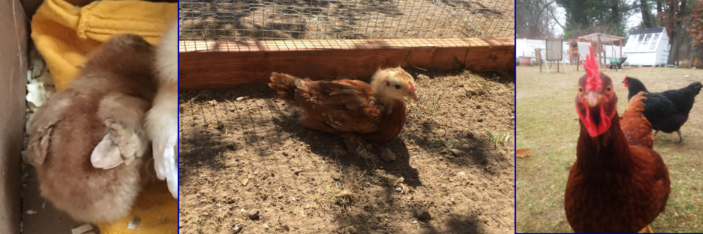
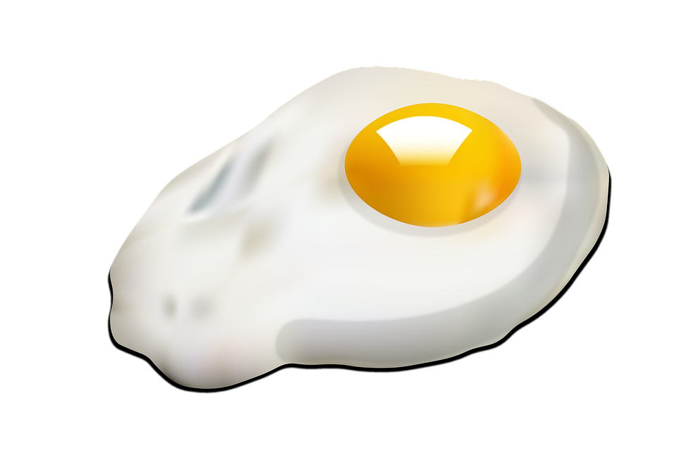

Chicks
When you get little chicks from the hatchery, they need to be taken cared for right away. That is why it's good to prepare before you get them. If you get them from the post office, you should immediatly call the post office for them to call you back immediatly when the chicks arrive. This will lower the risk of dead chicks.
Things you should prepare

These are the things you should get ready for before the chicks arrive at your home.
- Cardboard box with 5 inches of space for each chick
- Feeder
- Waterer
- Brooder (A heating board that chicks can go under for warmth)
- Bedding (shreds of wood)
As the chicks grow to about 3 weeks old, they don't need the brooder anymore. They can move into the coop after 3 weeks.
NOTICE:
Chicks under 3 weeks of age SHOULD NOT come in contact with dirt. They will have a high risk of developing a disease called coccidiosis. They will have diarreah. If your chicks haven't been vaccinated and are showing symptoms, simpky feed them tumeric or garlic with their normal food. Not that I suggest you to vaccinate them, though. Always wash your hands before using them to enjoy the chicks' fluffiness!
Chickens
Once chicks grow up to 3 weeks old, they are able to live in a chicken coop. The chicken coop should have the following:
- Run
- Waterer
- Feeder
- Perches
- Nesting boxes
Perches

Now, you might not know what perches and nesting boxes are, so I will go over them. There should be perches in the chicken coop. Perches are high wooden bras and planks that the chickes stand on to sleep during the night. The higher they are, the better. Chickens like to sleep in high places. It's a natural instinct. When the chickens get used to the coop, it may take a few weeks for them to jump up to the perches and sleep there. They might not be used to being in the coop, and you might need to put them one by one into it. After time, they will get used to it and see the coop as a safe place to be.
Nesting boxes
If you want your chickens to lay eggs, then you need nesting boxes. They are probably the most important things you should have in you coop besides the waterer and the feeder. Nesting boxes are boxes that should be 1.5 feet by 1.5 feet by 1.5 feet in volume and space. They should have straw or soft grassy material on them for chickens to build a nest in. The nesting boxes should be covered up during the time the chickens are not yet 3 months old. This will prevent them for sleeping in them and littering brown mush in them. The nesting box could have plastic eggs in them to serve as an example as eggs. Note that chickens start laying eggs 5 months or more after they are born.
The chicken run
A chicken run is a highly suggested item that you should consider allowing your chickens to have access to. The chicken run is basically a large space where the chickens can enjoy the outside, but it has a roof and walls. Freeranging your chickens is also highly recommended. Free ranging is letting your chicken out into the backyard to roam around freely. Keep an eye on them always to protect the chickens from dangerous predators. The more freeranging your chickens have, the healthier they get.

Eggs

When the chickens start laying eggs, it is very exciting to get the first one. The oranger the yolk, the healthier the chicken. Usually when chickens are proud that they lay an egg, they would start clucking loudly to represent proudness. Hens don't need roosters to lay eggs. It's just that they won't hatch. You WOULD need a rooster in order to HATCH the eggs the hens lay. They would all squeeze into only one box to lay their eggs. This doesn't mean you should only have 1 nesting box, because extra boxes may be needed and used. New eggs are surprisingly warm an sometimes even wet. The wetness is a formula the chicken uses to coat around her egg to prevent bacteria and germs from getting inside. Sometimes, the eggs need to be washed because of some unfortunate accident... For every 10 chickens, you are able to recieve 7 eggs each day at average. Sometimes more, sometimes less. The colder the weather, the less eggs would be layed (I know from experience).
Chickens' sense of cleanliness
Instead of jumping into water and scrubbing themselves like you expect ducks to do in a pond, chickens are not fond of water, exept when it comes to drinking it. Instead, you might find them making themselves even dirtirer. They roll around in dirt. that might seem wrong, but for chickens, rolling around in dust picks out lice and other bugs in their feathers. Dirt also cools them down on a hot day. That's why you won't see them doing so in winter. Well, usually there isn't any dirt in winter in the first place anyways. You can see them flinging dirt in every possible corner of themselves.
Snacks

Chickens love to eat. The whole purpose and dedication of a chicken's life to them is to find food. You see them digging around the coop. You see them digging around the run. You see them ruining your flowerbed. You see your garden being destroyed. They do that all for food. And occasionaly, a dust bath. Chickens like to eat things like fruit and vegetables and especially insects and meat. Feeding them vegetables and fruit and enough calcium is essencial! Grit are crushed oyester shells. They provide calcium for the chickens and help them digest food. Don't feed grit for their meal, though.
The end
I hope you learned more about chickens today! Meet Chocolate! Below is a final image of the same chicken, starting from a baby chick and growing up to the point when she could lay eggs!

Jokes
To see the answers, click and drag your mouse (highlight) the blue boxes below the questions.
What did the chicken code?
Scratch
What happens to chickens who don't make eggs?
They make it to the pot
Why did the chicken do jumping jacks?
Because she wanted scrambled eggs
What do you say to a chicken who crosses the street?
Eggs-cuse me
What happens when a recently hatched chick hangs out with a rabbit?
It gets tattoos
What do you call all of the above?
Egg-jokes
